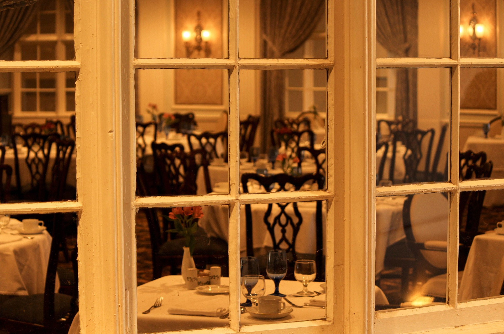

Sobre Nós
Conheça a história por trás do Sabor & Arte
Nossa História
Fundado em 2015, o Sabor & Arte nasceu do sonho de unir a riqueza da gastronomia brasileira com técnicas da culinária internacional. Desde o início, buscamos criar um espaço onde cada refeição se torna uma experiência memorável. Nossa equipe de chefs trabalha com ingredientes frescos e selecionados, priorizando produtores locais e sustentabilidade. Cada prato é uma obra de arte que celebra sabores autênticos.


Nossa Cozinha
Com mais de 20 anos de experiência, nosso chef executivo lidera uma equipe apaixonada por criar pratos que surpreendem e encantam.
Cada receita é desenvolvida com atenção aos detalhes e respeito pelos ingredientes.
Do risoto cremoso ao filé mignon perfeitamente selado, cada criação reflete nossa filosofia: simplicidade sofisticada e sabores genuínos.
Qualidade
Ingredientes selecionados e técnicas refinadas em cada prato que servimos.
Tradição
Receitas que honram a culinária clássica com toques contemporâneos.
Acolhimento
Um ambiente onde cada cliente se sente especial e bem-vindo.